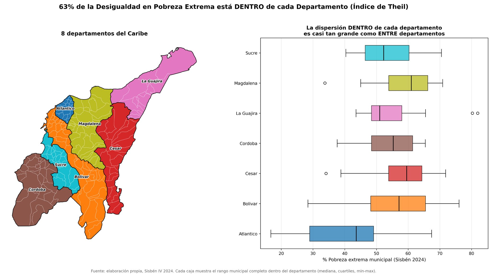
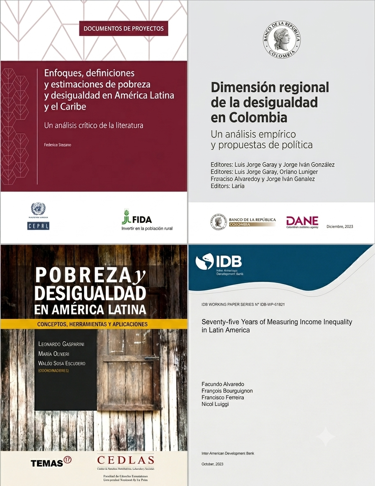
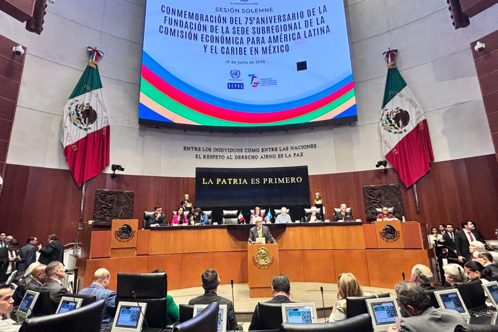

Medición, determinantes y políticas públicas para su reducción
OCSA · CLACSO
julio 2026
Carlos Andrés Yanes Guerra
Director del OCSA
🎓 Profesor Asistente, Departamento de Economía
📉 Enfocado en Microeconomía, Econometría y Ciencia de Datos
💻 GitHub
América Latina enfrenta una desigualdad estructural que limita el crecimiento, debilita la cohesión social y afecta las instituciones. Superarla requiere no solo crecimiento económico, sino políticas públicas orientadas a un desarrollo más inclusivo.
Fuente: CEPAL, Panorama Social de América Latina y el Caribe 2025.
🌎 Desigualdad de ingresos 0,40-0,70 rango del Gini en la región
📊 Lo que las encuestas no ven +17pp sube el Gini al sumar ingresos de capital y de los más ricos
🗺️ Desigualdad entre países ~8% de la desigualdad regional; el resto es dentro de cada país
🎓 Desigualdad de oportunidades
Fuente: Alvaredo, Bourguignon, Ferreira y Lustig (2023), Seventy-five Years of Measuring Income Inequality in Latin America, BID — 1948-2021 (75 años), 34 países de América Latina y el Caribe.
Colombia es uno de los países más desiguales del mundo.
América Latina ha reducido gradualmente la desigualdad desde inicios de los 2000s, aunque mantiene niveles elevados. Colombia permanece rezagada mientras se aleja de la tendencia regional, con niveles de desigualdad prácticamente idénticos a los de hace 30 años.
Fuente: CEPALSTAT, elaboración propia.
Ranking mundial
Nota: 2021 incluye 80+ países; 2024 tiene ~30 países.
Fuente: CEPALSTAT, elaboración propia.
Indicador complementario
El Índice de Theil mide la desigualdad de forma alternativa al Gini, otorgando más peso a las colas de las distribuciones.
Fuente: CEPALSTAT, elaboración propia.

Fuente: Alvaro Chaves, Working Paper, 2026.
1% de mayores ingresos
10% de mayores ingresos
50% de menores ingresos
En América Latina, el 1 % de la población con mayores ingresos concentra, en promedio, una cuarta parte del ingreso total de la región.
En Colombia, el 10% de la población con mayores ingresos concentra más de la mitad del ingreso nacional.
Mientras tanto, la mitad de la población con menores ingresos percibe menos del 10% del ingreso nacional.
En términos generales, Colombia no difiere mucho del promedio latinoamericano en este aspecto, aunque presenta niveles de desigualdad ligeramente superiores a los de la mayoría de los países de la región.
🇨🇴 Gini Colombia 2024 0,551 vs. 0,553 en 2023 — mejora marginal, sigue entre los más altos del mundo
📉 Pobreza monetaria Colombia 31,8% -2,8pp frente a 2023; la mayor caída desde 2012 (DANE)
🌎 Gini regional 2024 0,452 vs. 0,456 en 2023; pobreza regional baja de 27,7% a 25,5% (CEPAL)
🧩 Palanca pendiente -14% caería el Gini regional con formalización laboral plena (CEPAL)
Fuente: DANE, Boletín Técnico Pobreza Monetaria 2024; CEPAL, Panorama Social de América Latina y el Caribe 2025.


CEPAL, Sesión Solemne 75° Aniversario, Ciudad de México, 17 de junio de 2026.
Alvaredo, F., Bourguignon, F., Ferreira, F., & Lustig, N. (2023). Seventy-five years of measuring income inequality in Latin America (IDB Working Paper Series No. 1521). Banco Interamericano de Desarrollo.
Bonilla Mejía, L. (Ed.). (2011). Dimensión regional de las desigualdades en Colombia. Banco de la República.
CEPAL. (2016). La matriz de la desigualdad social en América Latina (LC/G.2690(MDS.1/2)). Naciones Unidas.
CEPAL. (2025). Panorama Social de América Latina y el Caribe 2025: cómo salir de la trampa de alta desigualdad, baja movilidad social y débil cohesión social. Naciones Unidas.
Gasparini, L., Cicowiez, M., & Sosa Escudero, W. (2013). Pobreza y desigualdad en América Latina: Conceptos, herramientas y aplicaciones. Temas Grupo Editorial.
Mejía Jiménez, J. (2012). Modelos de implementación de las políticas públicas en Colombia y su impacto en el bienestar social. Analecta Política, 2(3), 141-164.
OCDE. (2025). Movilidad social y desigualdad en América Latina y el Caribe: Perspectivas desde la educación y las competencias. OECD Publishing. https://doi.org/10.1787/3557f989-es
Stezano, F. (2020). Enfoques, definiciones y estimaciones de pobreza y desigualdad en América Latina y el Caribe: Un análisis crítico de la literatura (LC/TS.2020/143). CEPAL.
CEPALSTAT — Comisión Económica para América Latina y el Caribe (CEPAL). Índice de Gini de concentración del ingreso. https://statistics.cepal.org/portal/cepalstat/
DANE — Departamento Administrativo Nacional de Estadística. Boletín Técnico Pobreza Monetaria en Colombia, 2024. https://www.dane.gov.co
SEDLAC — Socio-Economic Database for Latin America and the Caribbean (CEDLAS y Banco Mundial). https://www.cedlas.econo.unlp.edu.ar/wp/en/estadisticas/sedlac/
Our World in Data. Economic inequality: Gini index (a partir del World Bank Poverty and Inequality Platform). https://ourworldindata.org/grapher/economic-inequality-gini-index
World Inequality Database — WID.world. Participación en el ingreso nacional. https://wid.world/
Contacto: ocsa@uninorte.edu.co
Website: https://www.uninorte.edu.co/web/ocsa
Bloque D - Segundo piso
Universidad del Norte